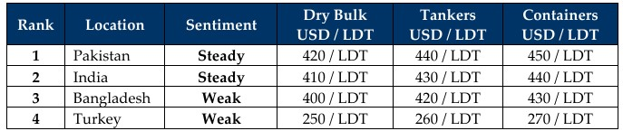

inWeekly Demolition Reports15/09/2025

As global conflicts rage on with no signs of resolution or abatement on the horizon, the ongoing and deliberate spectacle of politicalgoof-ups continues to dictate the destiny of global freight rates as well as the ship recycling markets — with determined impunity. Escalatory and retaliatory moves kept key trading routes and markets on edge as freight rates propped up this week, with the Baltic Exchange Dry Index reporting a whopping 7.4% overall increase. Capesize, Panamax, and Supramax indices all firmed in unison to the tune of 1.0%, 0.4%, and 0.5% respectively. As trading rates jumped, so did crude oil—albeit marginally—ending the week at USD 62.74/barrel (vs. USD 62.14/barrel at the start of the week).
Mixed in with the craziness of tariffs is the growing and murky collection of sanctioned units that continue to trickle into the markets along with legitimate ones. This week also delivered an early Christmas surprise as tonnage that had been missing from the bidding tables for weeks on end somehow managed to find its way onto Indian sub-continent recycling beaches—marginally in Bangladesh and en masse into India, with over 155K Tons LDT and a few behemoth LNGs arriving at both waterfronts. Certainly an “ice-cube down the back” kind of flashback moment to the glorious days of loaded recycling beaches.
As we segue into individual sub-continent ship recycling destinations, with yard infrastructure upgrades ticking forward by the week, HKC approvals remain the bright spot in Bangladesh as 18 ship recycling yards are now fully accredited to global standards. Pakistan remains far behind, with only news of upgrades coming forth, but the coveted “first yard in Pakistan to get HKC certified” title remains missing a participants list htus far. Currencies also nailed down the week’s pressure points—especially in India—as virtually all recycling nation currencies depreciated in the teens against the U.S. Dollar. Surprisingly, it wasn’t Turkey that took the largest currency hit of the week, even though there is one to report from here too. Steel plate prices, by contrast, flatlined across the spectrum—even in China—as fresh tariff rumors made the rounds once again.
Overall, as the stasis of inactivity evaporated in Alang this week, India remained whipsawed by the INR’s ongoing collapse, and protectionist-minded headwinds from local buyers will likely greet sellers with tumbling demand and pricing in response. Bangladesh remains inert overall, as its interim regime fails to revive activity and beachings are like drops of rain in the desert. Pakistan stays eager but forcibly idle, unable to secure vessels while freight trades rich and local buyers remain unwilling to discard their precious DASRs on small LDT units. Turkey remains in the cellar, red tape intact, and activity nil.
For Week 37 of 2025, GMS Market Rankings / vessel indications are as below.

📄 Download PDF: Ship-recycling-market-insight-Week-36-09-12-2025-Governing_Goofups.pdfSource: GMS,Inc.https://www.gmsinc.net/gms_new/index.php/web